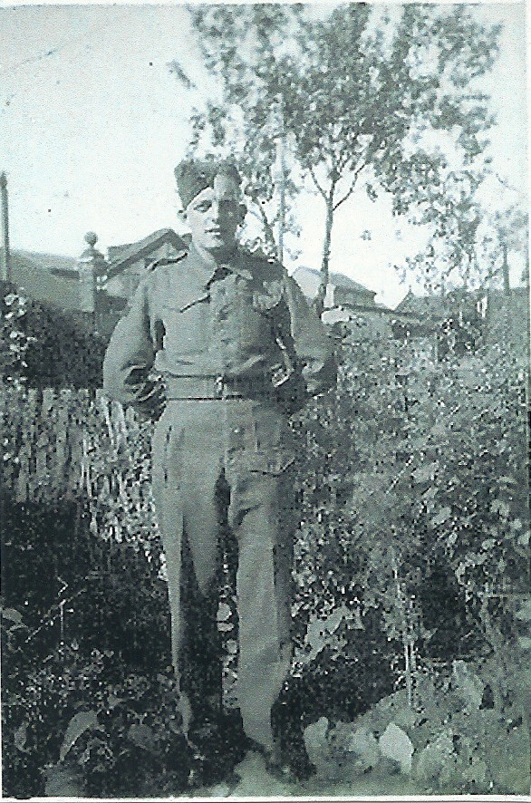
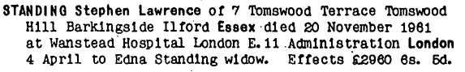
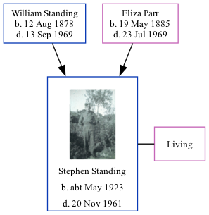

Stephen Lawrence Standing cMay 1923 - 1961
[ Home ] | [ Calendar ] | [ Surnames Index ] | [ Family History ]The child of William Standing (a laundryman) and Eliza Parr, Stephen Standing, the fourth cousin once-removed on the father's side of Nigel Horne, was born in Romford, Essex, England c. May 19231,2,3,4. He married Edna Godfrey in Ilford, Essex, England around Nov 19456 (Oct/Nov/Dec). In 1961, he lived at 7 Tomswood Terrace, Barkingside, Essex5.
He died on Nov 20, 1961 at King George Hospital, Ilford, London, England2,4,5.
Parents
- William Ernest was born on Aug 12, 1878
- Eliza Mary was born on May 19, 1885
Citations
- England & Wales births 1837-2006 - Findmypast
- England & Wales deaths 1837-2007 - Findmypast
- England & Wales, Birth Index: 1916-2005 Online publication - Provo, UT, USA: The Generations Network, Inc., 2008.Original data - General Register Office. England and Wales Civil Registration Indexes. London, England: General Register Office. © Crown copyright. Published by permission of the Cont
- England & Wales, Death Index: 1984-2005 Online publication - Provo, UT, USA: The Generations Network, Inc., 2007.Original data - General Register Office. England and Wales Civil Registration Indexes. London, England: General Register Office. © Crown copyright. Published by permission of the Cont
- England & Wales Government Probate Death Index 1960-2019 - Findmypast
- England & Wales, Marriage Index: 1916-2005 Online publication - Provo, UT, USA: The Generations Network, Inc., 2009.Original data - General Register Office. England and Wales Civil Registration Indexes. London, England: General Register Office. © Crown copyright. Published by permission of the Cont
Media
Stephen Lawrence STANDING

Stephen Lawrence - probate

England & Wales deaths 1837-2007 Transcription - BMD-D-1961-4-AZ-001045-119
England & Wales births 1837-2006 Transcription - BMD-B-1923-2-AZ-001331-083
England & Wales marriages 1837-2008 Transcription - BMD-M-1945-4-AZ-001390-010
England & Wales Government Probate Death Index 1960-2019 - GBOR/GOVPROBATE/A/1960-1962/00476706
Family Tree
Generated by Ged2Site. Last updated on Jul 20, 2025